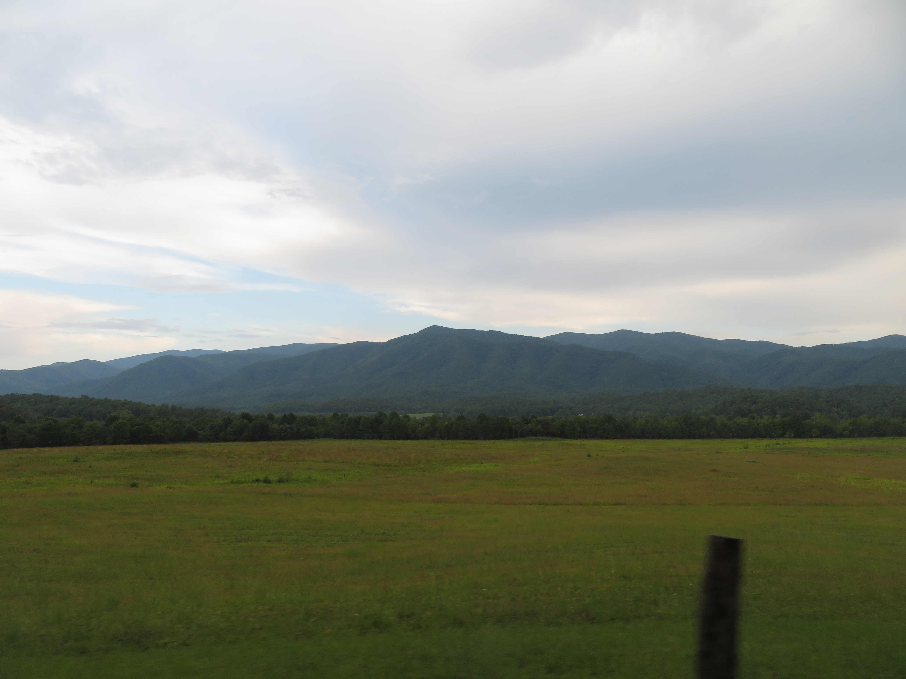
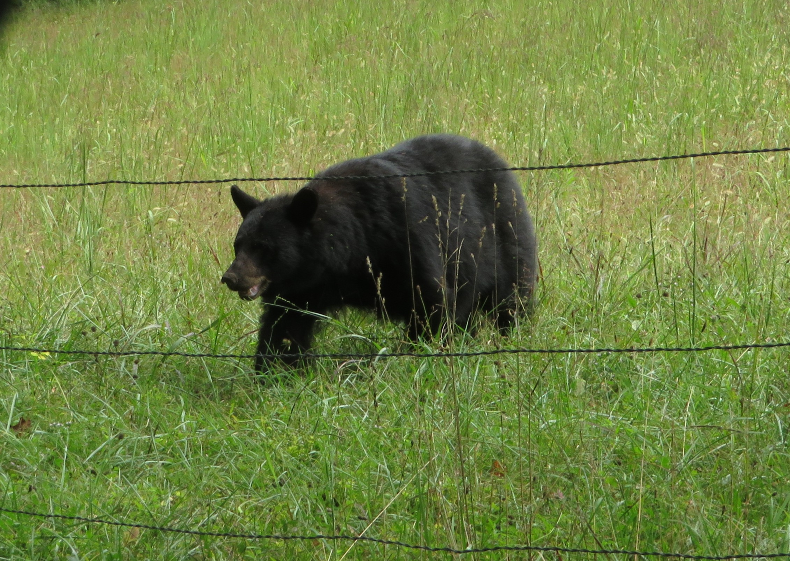
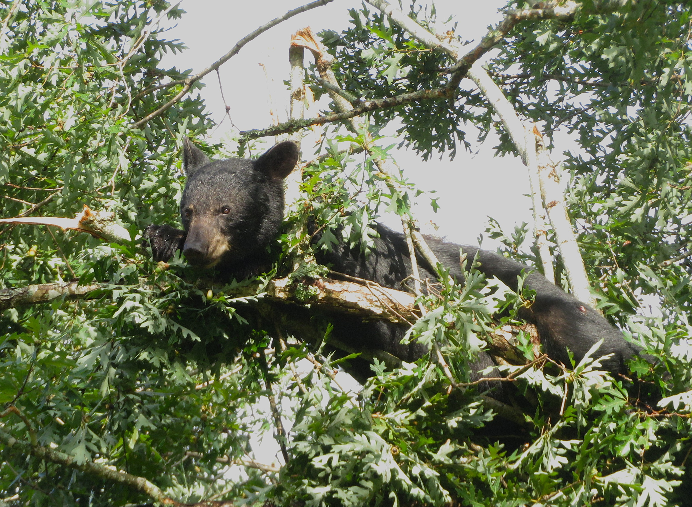
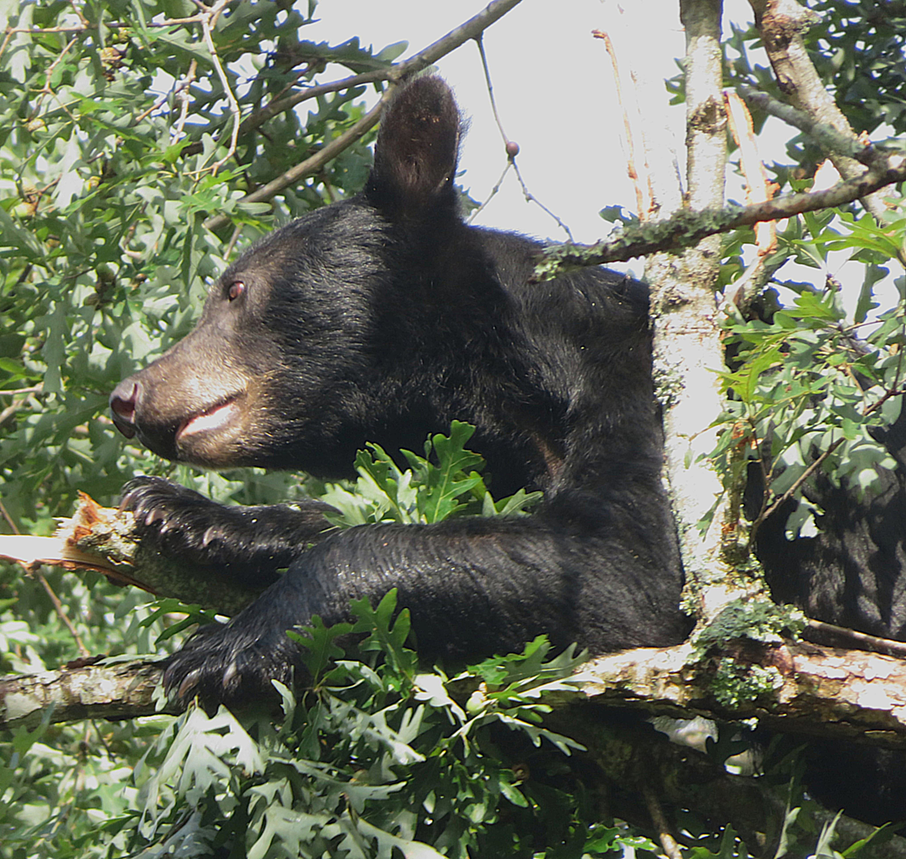

Great Smoky Mountains National Park in both Tennessee and North Carolina is the most visited national park in the U.S, and its no wonder why. From gorgeous mountain and valley views to great wildlife opportunities, this park is one of my favorites in the country.

The Smokies are home to some fantastic sightseeing opportunities. My favorite place has to be Cades Cove (Left), a extensive valley that's home to plenty of wildlife (see below). The Newfound Gap road (Center) and Clingmans Dome are also fantastic, taking you to some of the most scenic mountain views in the park, which are sometimes covered in a gorgeous layer of fog ("Smoke"). The waterfalls here, such as Abrams Falls (Right) in Cades Cove as well as Laurel Falls, are also really cool attractions to visit here in the park.


The Great Smoky Mountains have tons of wildlife, with the most iconic being Black Bears. I saw over 20 of them on my visit, with all of them occuring in Cades Cove on the Tennessee side. My favorite, by far, has to be a mother bear and her 4 Cubs (Top Row) hanging out in the woods, the most bear cubs I've ever seen at once. They were some of the cutest things I've ever seen, especially watching them play around and climb trees in the distance. Other notable bear sightings included a large bear crossing the road (Bottom Left) and a smaller bear (Bottom Center, bottom right) feasting on berries and nuts up in a tree, which was also extremely adorable.




